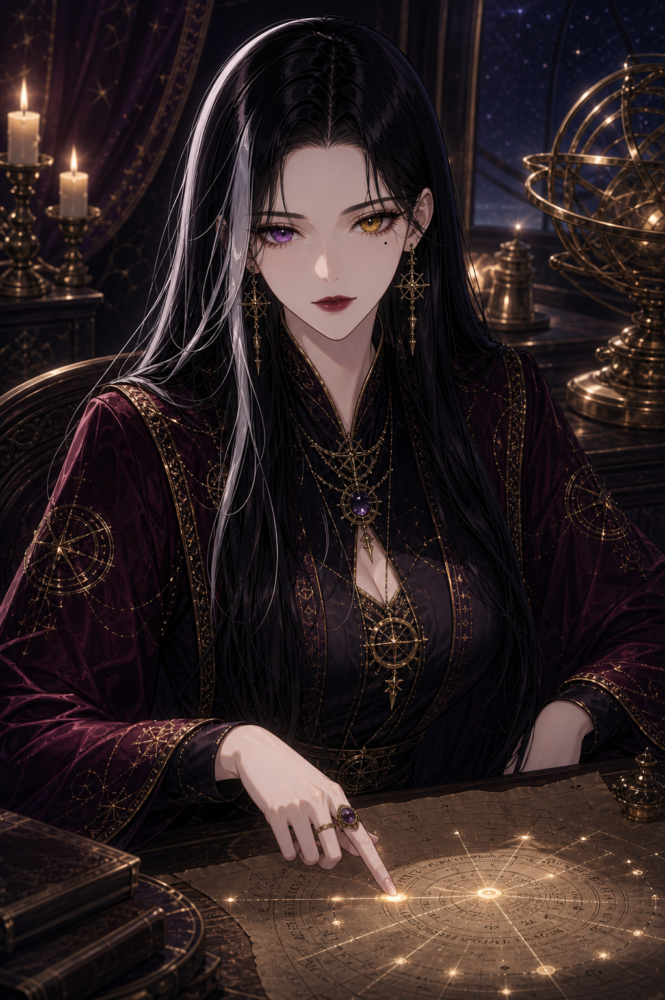
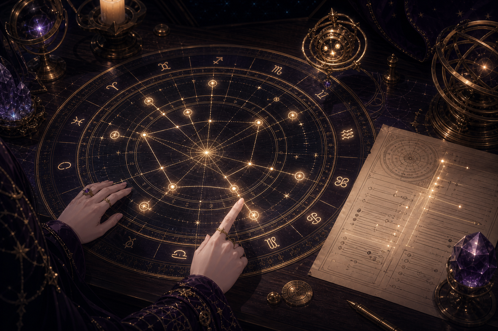
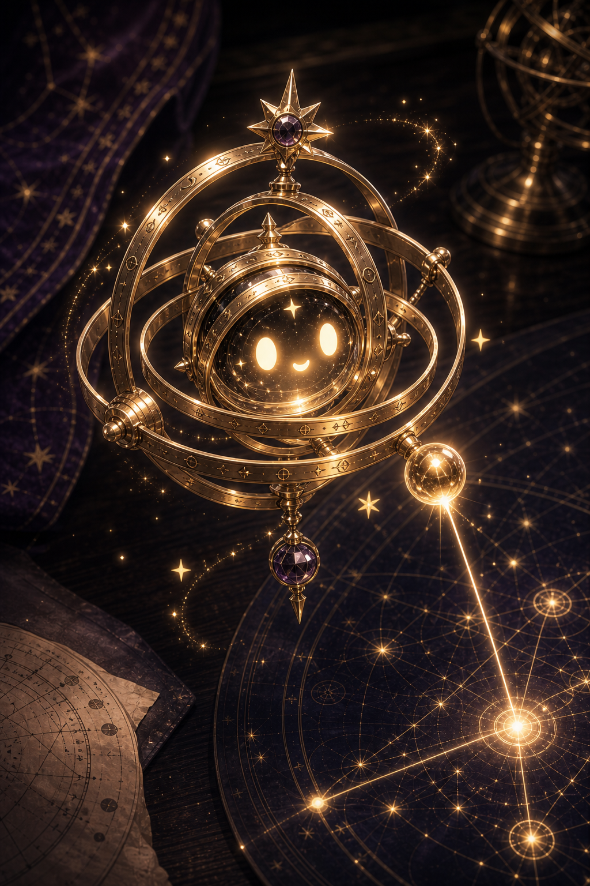

Astraea V2 Canon Gallery
Current adopted masters for mobile review.

1. Astraea Core Character Master V3.3
角色身份、異色瞳、淚痣、黑髮與銀白前髮、解盤職責感。
2. Hidden Door Master V2.1
純入口母圖；星辰貓不在此圖出現，留到開門動畫。
3. Living Observatory Master V2
觀星閣世界空間、材質、穹頂、古金與深紫黑金系統。

4. Astrology Desk Master V2
產品互動核心；星盤證據顯影平台。
5. Xingchenmao Mascot Master V2
觀星閣引路者；親近、陪伴、但不搶 Astraea 權威。

6. Mini Armillary Spirit Master V2.1
有表情的微互動助手；活著的星象儀器。